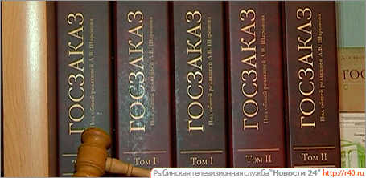

В связи с введением в действие федерального закона от 05.04.2013 №44-ФЗ «О контрактной системе в сфере закупок товаров, работ, услуг для обеспечения государственных и муниципальных нужд» одним из основных видов нашей деятельности является проведение экспертизы в сфере государственных закупок.
Наши специалисты являются профессионалами в экспертной деятельности,обладают специальными познаниями, опытом, квалификацией в соответствующих областях экспертиз и оценки.
В Законе № 44-ФЗ подробно описано, каким образом заказчик должен осуществлять приемку товаров и документально ее оформлять (ч. 6 — 8 ст. 94 Закона № 44-ФЗ).
Одним из важных элементов приемки товара является проведение заказчиком экспертизы соответствия условиям контракта в отношении предоставленных поставщиком (подрядчиком, исполнителем) результатов (ч. 3 ст. 94 Закона № 44-ФЗ).
Заказчик обязан привлекать экспертов, экспертные организации к проведению экспертизы поставле
нного товара, выполненной работы или оказанной услуги в случае, если закупка осуществляется у единственного контрагента, за исключением случаев, предусмотренных п.п. 1, 4-6, 8, 15, 17, 18, 22, 23, 26 и 27 ч. 1 ст. 93 Закона N 44-ФЗ. Правительство Российской Федерации вправе определить иные случаи обязательного проведения экспертами, экспертными организациями экспертизы поставленных товаров, выполненных работ, оказанных услуг, предусмотренных контрактом (ч. 4 ст. 94 указанного Закона).
По решению заказчика для приемки поставленного товара, выполненной работы или оказанной услуги, результатов отдельного этапа исполнения контракта может создаваться приемочная комиссия, которая состоит не менее чем из пяти человек (ч. 6 ст. 94 Закона N 44-ФЗ).
В случае привлечения к экспертизе заказчиком экспертов, экспертных организаций при принятии решения о приемке или об отказе в приемке результатов отдельного этапа исполнения контракта либо поставленного товара, выполненной работы или оказанной услуги приемочная комиссия должна учитывать отраженные в заключении по результатам указанной экспертизы предложения экспертов, экспертных организаций, привлеченных для ее проведения (ч. 7 ст. 94 Закона N 44-ФЗ).
Эксперты, экспертные организации имеют право запрашивать у заказчика и контрагента дополнительные материалы, относящиеся к условиям исполнения контракта и отдельным этапам исполнения контракта. Результаты такой экспертизы оформляются в виде заключения, которое подписывается экспертом, уполномоченным представителем экспертной организации и должно быть объективным, обоснованным и соответствовать законодательству Российской Федерации. В случае, если по результатам такой экспертизы установлены нарушения требований контракта, не препятствующие приемке поставленного товара, выполненной работы или оказанной услуги, в заключении могут содержаться предложения об устранении данных нарушений, в том числе с указанием срока их устранения (ч. 5 ст. 94 Закона N 44-ФЗ).
Заказчик вправе не отказывать в приемке товара, работы, услуги либо результатов отдельного этапа исполнения контракта, если выявленное несоответствие их условиям контракта не препятствует приемке этих результатов либо этих товара, работы, услуги и устранено контрагентом (ч. 8 ст. 94 Закона N 44-ФЗ).
Также обратим внимание, что ч. 2 ст. 94 Закона N 44-ФЗ предусмотрено, что контрагент в соответствии с условиями контракта обязан своевременно предоставлять достоверную информацию о ходе исполнения своих обязательств, в том числе о сложностях, возникающих при исполнении контракта, а также к установленному контрактом сроку предоставить заказчику результаты поставки товара, выполнения работы или оказания услуги, предусмотренные контрактом.
Для проверки предоставленных поставщиком (подрядчиком, исполнителем) результатов, предусмотренных контрактом, в части их соответствия условиям контракта заказчик обязан провести экспертизу. Ее могут проводить:
заказчик своими силами; эксперты и экспертные организации, привлекаемые к проведению работ на основании контрактов, заключенных согласно Закону о контрактной системе.Заказчик не привлекает экспертов, экспертные организации
Заказчик не привлекает экспертов, экспертные организации к проведению экспертизы поставленного товара, выполненной работы или оказанной услуги в следующих случаях осуществления закупки у единственного поставщика (подрядчика, исполнителя):
- закупка товара, работы или услуги, которые относятся к сфере деятельности субъектов естественных монополий в соответствии с Федеральным законом от 17.08.1995 N 147-ФЗ «О естественных монополиях»;
закупка товара, работы или услуги на сумму, не превышающую 100 000 руб. При этом совокупный годовой объем закупок, который заказчик вправе осуществить на основании этого пункта, не превышает 5% размера средств, предусмотренных на осуществление всех закупок заказчика в соответствии с планом-графиком, и составляет не более чем 50 млн. руб. в год. Указанные ограничения — предельные значения размеров средств — не распространяются на закупки товаров, работ, услуг заказчиками для нужд сельских поселений;
закупка товара, работы или услуги государственным или муниципальным образовательным учреждением, государственным или муниципальным учреждением культуры, уставными целями деятельности которых являются сохранение, использование и популяризация объектов культурного наследия, а также иным государственным или муниципальным учреждением (зоопарк, планетарий, парк культуры и отдыха, заповедник, ботанический сад, национальный, природный, ландшафтный парки, театр, учреждение, осуществляющее концертную деятельность, телерадиовещательное учреждение, цирк, музей, дом культуры, дворец культуры, клуб, библиотека, архив) на сумму, не превышающую 400 тыс. руб. При этом совокупный годовой объем закупок, который заказчик вправе осуществить на основании настоящего пункта, не превышает 50% размера средств, предусмотренных на осуществление всех закупок заказчика в соответствии с планом-графиком, и составляет не более 20 млн. руб. в год; возникновение потребности в работе или услуге, выполнение или оказание которых может осуществляться только органом исполнительной власти согласно его полномочиям либо подведомственными ему государственным учреждением, государственным унитарным предприятием, соответствующие полномочия которых устанавливаются федеральными законами, нормативными правовыми актами Президента РФ или Правительства РФ, законодательными актами соответствующего субъекта РФ; оказание услуг по водоснабжению, водоотведению, теплоснабжению, газоснабжению (за исключением услуг по реализации сжиженного газа), по подключению (присоединению) к сетям инженерно-технического обеспечения по регулируемым законодательством РФ ценам (тарифам), по хранению и ввозу (вывозу) наркотических средств и психотропных веществ; заключение контракта на посещение зоопарка, театра, кинотеатра, концерта, цирка, музея, выставки или спортивного мероприятия;
- заключение контракта театром, учреждением, осуществляющим концертную или театральную деятельность, в том числе концертным коллективом (танцевальным коллективом, хоровым коллективом, орк
- естром, ансамблем), телерадиовещательным учреждением, цирком, музеем, домом культуры, дворцом культуры, клубом, образовательным учреждением, зоопарком, планетарием, парком культуры и отдыха, заповедником, ботаническим садом, национальным парком, природным парком или ландшафтным парком с конкретным физическим лицом на создание произведения литературы или искусства, либо с конкретным физическим или конкретным юридическим лицом, осуществляющими концертную или театральную деятельность, в том числе концертным коллективом (танцевальным коллективом, хоровым коллективом, оркестром, ансамблем), на исполнение, либо с физическим или юридическим лицом на изготовление и поставки декораций, сценической мебели, сценических костюмов (в том числе головных уборов и обуви) и необходимых для создания декораций и костю
- мов материалов, а также театрального реквизита, бутафории, грима, постижерских изделий, театральных кукол, необходимых для создания и (или) исполнения произведений указанными организациями;
- заключение контракта на оказание услуг по реализации входных билетов и абонементов на посещение театрально-зрелищных, культурно-просветительных и зрелищно-развлекательных мероприятий, экскурсионных билетов и экскурсионных путевок — бланков строгой отчетности;
- заключение контракта на оказание услуг по содержанию и ремонту одного или нескольких нежилых помещений, переданных в безвозмездное пользование или оперативное управление заказчику, если данные услуги оказываются другому лицу или другим лицам, пользующимся нежилыми помещениями, находящимися в здании, в котором расположены помещения, переданные заказчику в безвозмездное пользование или оперативное управление;
- заключение контракта на оказание услуг, связанных с направлением работника в служебную командировку, с участием в проведении фестивалей, концертов, представлений и подобных культурных мероприятий (в том числе гастролей) на основании приглашений на посещение указанных мероприятий. К таким услугам относятся обеспечение проезда к месту служебной командировки, месту проведения указанных мероприятий и обратно, наем жилого помещения, транспортное обслуживание, обеспечение питанием.
Во всех остальных случаях проведение экспертизы при принятии товаров, работ, услуг при исполнении контракта и отдельных этапов контракта обязательно.
К отчету прилагаются заключение по результатам экспертизы отдельного этапа исполнения контракта, поставленного товара, выполненной работы или оказанной услуги и документ о приемке таких результатов либо иной определенный законодательством РФ документ. Позже Правительство РФ, органы государственной власти субъектов РФ и местного самоуправления разработают документ, в соответствии с которым данная информация будет размещаться на официальном сайте.